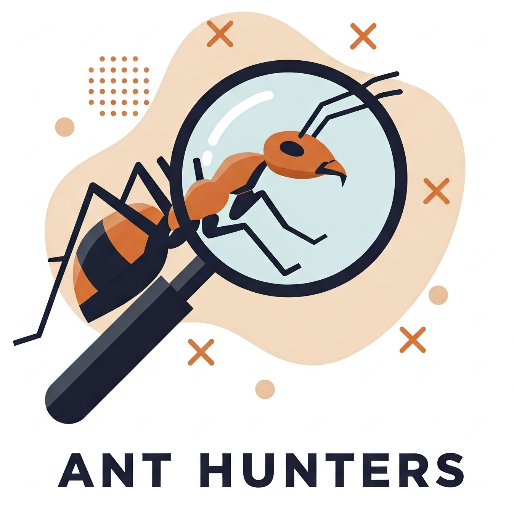

Español
Italiano
Português
Français
English
Ant Hunters
¿Qué es Ant Hunters?
Protocolos de muestreo
¿Cómo participar en Ant Hunters?
¿Quiénes somos?
Sponsor
Contacto

¡Participa en este proyecto de ciencia ciudadana para estudiar las hormigas de tu entorno!